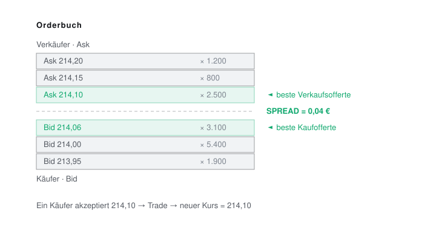
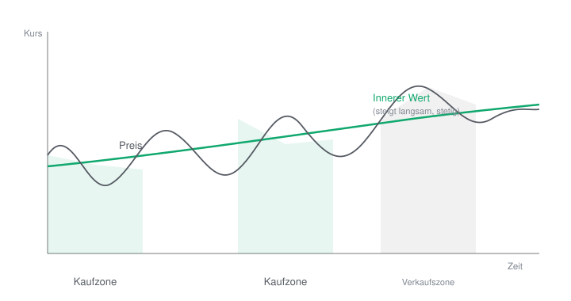
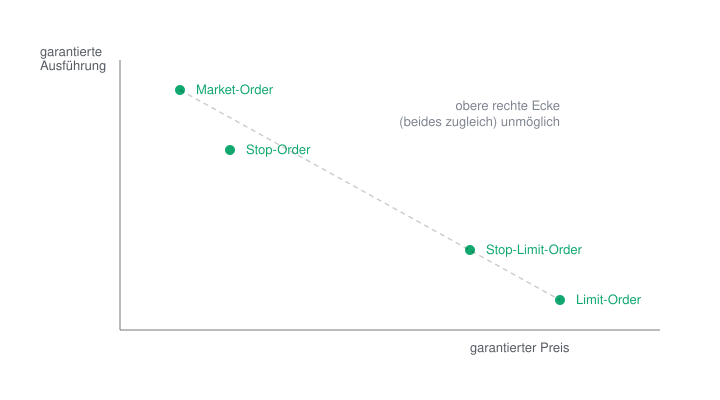
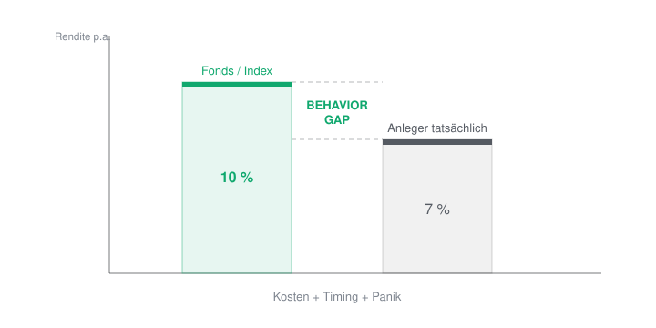
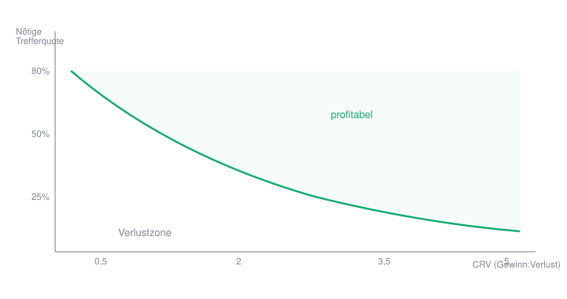
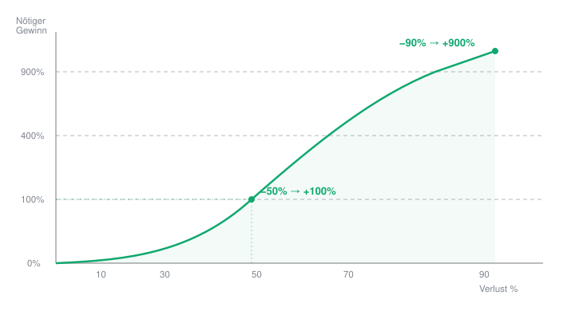
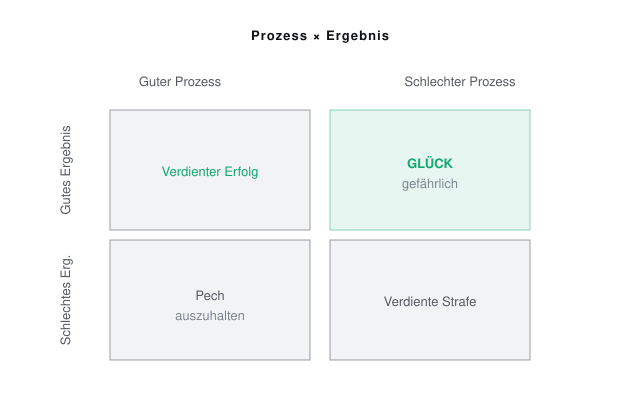

Lernziele
Nach diesem Modul kannst du:
- erklären, wodurch sich Investieren und aktiver Aktienhandel unterscheiden — und wo dein eigener Ansatz auf diesem Spektrum liegt;
- beschreiben, wie ein Aktienkurs mechanisch zustande kommt und warum Preis und Wert zwei verschiedene Dinge sind;
- benennen, wer die anderen Marktteilnehmer sind, welche Vorteile sie haben — und welchen Vorteil ausgerechnet du hast;
- ein Orderbuch lesen und Bid, Ask, Spread, Liquidität und Volumen korrekt interpretieren;
- die passende Orderart für eine gegebene Situation auswählen und die typischen Fallen vermeiden;
- den Erwartungswert eines Handelssystems berechnen und erklären, warum eine Trefferquote von 40 % profitabler sein kann als eine von 70 %;
- die Asymmetrie von Verlusten quantifizieren und daraus ableiten, warum Risikomanagement der Aktienauswahl vorgelagert ist;
- empirisch begründen, warum die Mehrheit der Privatanleger schlechter abschneidet als der Markt — und welche dieser Ursachen bei dir selbst wirksam sind.
1.1Investieren oder Handeln? Ein Spektrum, keine Grenze
Die Frage „Bist du Investor oder Trader?" wird oft als Identitätsfrage gestellt. Sie ist in Wahrheit eine Frage nach drei Parametern: Haltedauer, Entscheidungstreiber und Ausstiegskriterium.
| Passives Investieren | Aktiver Aktienhandel (dieser Kurs) | Swing Trading | Daytrading | |
|---|---|---|---|---|
| Haltedauer | Jahrzehnte | Monate bis Jahre | Tage bis Wochen | Minuten bis Stunden |
| Entscheidungstreiber | keiner (Sparplan) | Unternehmenswert + Kurskontext | Kursmuster | Orderfluss, Momentum |
| Ausstiegskriterium | keines | Fair Value erreicht oder These widerlegt | Kursziel / Stop | Zeit / Stop |
| Notwendige Kompetenz | gering | hoch | hoch | sehr hoch |
| Kostenlast | minimal | niedrig | mittel | hoch |
| Wichtigster Gegner | Ungeduld | Selbsttäuschung | Rauschen | Kosten & Latenz |
Wo dieser Kurs steht: Wir kaufen Unternehmen, nicht Kurse. Aber wir kaufen sie nicht blind, sondern nutzen den Kurskontext, um den Einstieg zu optimieren und Ausstiege zu disziplinieren. Der Kurs ist damit das, was man am ehesten regelbasiertes Quality-Value-Investing mit technischem Timing-Filter nennen könnte.
Der entscheidende strukturelle Vorteil dieses Ansatzes ist nicht Intelligenz und nicht Information — beides haben andere in größerem Maße. Es ist Zeithorizont. Ein Fondsmanager, der an Quartalszahlen gemessen wird, kann eine Aktie nicht drei Jahre lang halten, während sie unterperformt, selbst wenn er weiß, dass sie unterbewertet ist. Er würde vorher entlassen. Du kannst das. Das ist deine einzige echte Arbitrage — und wenn du sie aufgibst, indem du hektisch handelst, gibst du das Einzige auf, was du hattest.
Merksatz 1Dein Vorteil als Privatanleger ist nicht Wissen, sondern Geduld. Wer hektisch handelt, tauscht seinen einzigen Vorteil gegen den Nachteil aller anderen ein.
1.2Wie entsteht ein Aktienkurs?
Der Kurs ist kein Wert — er ist ein Protokoll
Ein Aktienkurs ist der Preis, zu dem zuletzt eine Transaktion stattgefunden hat. Nicht mehr. Er sagt aus: Zu diesem Preis war ein Käufer bereit zu kaufen und ein Verkäufer bereit zu verkaufen.
Das hat eine Konsequenz, die man kaum überschätzen kann: Der Kurs wird vom marginalen Marktteilnehmer gesetzt, nicht von der Mehrheit. Apple hat rund 15 Milliarden Aktien im Umlauf. An einem normalen Tag wechseln vielleicht 50 Millionen davon den Besitzer — etwa 0,3 %. Der Preis, den alle 15 Milliarden Aktien in diesem Moment „haben", wird also von 0,3 % der Aktionäre bestimmt. Die anderen 99,7 % haben an diesem Tag gar keine Meinung geäußert. Sie haben schlicht nichts getan.
Wenn der Kurs an einem Tag um 4 % fällt, bedeutet das nicht, dass „der Markt" seine Meinung über Apple um 4 % nach unten korrigiert hat. Es bedeutet, dass unter den wenigen, die an diesem Tag handeln mussten oder wollten, die Verkäufer dringlicher waren als die Käufer.
Preisbildung im Detail

Wo siehst du das Orderbuch als Privatanleger?
Ehrliche Antwort: bei den meisten Standard-Brokern nur eingeschränkt. Neobroker wie Scalable Capital, Trade Republic oder Smartbroker zeigen in der App in der Regel nur den letzten gehandelten Kurs — das echte Orderbuch bleibt verborgen. Klassische Direktbanken wie comdirect, Consorsbank oder ING zeigen dir bei den meisten Titeln immerhin die beste Bid- und Ask-Seite (die „Marktdaten"- oder „Kurse"-Ansicht), aber selten die volle Buchtiefe. Wer mehrere Preisstufen live sehen will, braucht einen kostenpflichtigen Level-2-Datenfeed oder einen Broker mit Fokus auf aktive Händler (z. B. Interactive Brokers, CapTrader, sino) — oder greift zu Zusatzdiensten wie Traderfox oder Guidants.
Gut zu wissen — das kostenlose Xetra-Orderbuch: In Deutschland lässt sich das Orderbuch sogar kostenlos anschauen. Das öffentliche Xetra-Orderbuch (Xetra ist der deutsche Referenz-Handelsplatz mit der größten Markttiefe) zeigt die Kauf- und Verkaufsaufträge einer liquiden Aktie, ohne dass man ein kostenpflichtiges Level-2-Datenpaket beim Broker freischalten muss. Ein guter, kostenloser Weg, um einmal zu sehen, wie sich Bid, Ask und Markttiefe in der Praxis darstellen — bevor man (als kurzfristiger Händler) überhaupt über bezahlte Datenfeeds nachdenkt.
Für einen langfristigen Anleger ist die Mechanik wichtiger als der ständige Live-Blick: Du musst das Buch nicht permanent im Blick haben, um sinnvoll zu handeln. Was du aber verstanden haben solltest: Der eine Kurs, den dein Broker in der App anzeigt, ist eine Zusammenfassung — nicht die ganze Wahrheit über Angebot und Nachfrage.
Ein Kurs entsteht ausschließlich dann, wenn jemand die Preisvorstellung der Gegenseite akzeptiert. Solange sich Bid und Ask nicht berühren, passiert nichts — der Kurs steht still, obwohl beide Seiten voller Meinungen sind.
Preis vs. Wert
Benjamin Graham beschrieb den Markt kurzfristig als Abstimmungsmaschine und langfristig als Waage. Kurzfristig gewinnt, wer die meisten Stimmen (= das meiste Kaufinteresse) auf sich zieht — unabhängig von der Substanz. Langfristig setzt sich die tatsächliche Ertragskraft durch.
Genau in dieser Lücke arbeitest du:

Merksatz 2Der Kurs sagt dir, was andere heute bezahlen. Er sagt dir nichts darüber, was das Unternehmen wert ist. Die Differenz zwischen beidem ist dein gesamtes Geschäftsmodell.
1.3Gegen wen handelst du eigentlich?
Wenn du eine Aktie kaufst, verkauft sie dir jemand. Es lohnt sich zu wissen, wer.
| Teilnehmer | Anteil am Volumen | Zeithorizont | Motiv | Vorteil ggü. dir | Dein Vorteil ggü. ihm |
|---|---|---|---|---|---|
| Passive Indexfonds | sehr hoch | unendlich | Index abbilden | keiner | Sie sind preisblind — kaufen teuer, verkaufen billig, wenn Mittel fließen |
| Aktive Fonds | hoch | Quartale | Benchmark schlagen | Research, Zugang zum Management | Karrierezwang → sie müssen kurzfristig performen |
| Hedgefonds | mittel | Tage–Jahre | Absolute Rendite | Kapital, Hebel, Daten | Redemption-Risiko, Hebel zwingt zum Ausstieg |
| Market Maker / HFT | sehr hoch | Millisekunden | Spread verdienen | Latenz, Technik | Sie haben keine Meinung — sie sind kein Gegner |
| Unternehmen selbst | mittel | Jahre | Aktienrückkauf | Insiderwissen über sich | — |
| Insider (Vorstand) | gering | Jahre | Vergütung, Überzeugung | Informationsvorsprung | — |
| Privatanleger | gering | alles | alles | keiner | — |
Zwei Zeilen aus der Tabelle verdienen mehr Kontext
Market Maker / HFT sind spezialisierte Firmen (bekannte Namen: Citadel Securities, Virtu Financial, Susquehanna, Optiver), die permanent gleichzeitig eine Kaufofferte (Bid) und eine Verkaufsofferte (Ask) ins Orderbuch stellen. Ihr Geschäftsmodell ist nicht, eine Aktie zu besitzen, sondern die kleine Differenz zwischen Bid und Ask (den Spread) zu verdienen — und zwar millionenfach am Tag. Für dich sind sie im Alltag Infrastruktur, nicht Gegner: Wenn du eine Aktie kaufst, ist dein Verkäufer oft ein Market Maker — nicht weil er glaubt, die Aktie fällt, sondern weil das schlicht sein Geschäftsmodell ist. Deshalb sind sie in der Spalte „Dein Vorteil ggü. ihm" mit „keine Meinung — kein Gegner" gekennzeichnet.
Und die anderen Großen — Staaten, Zentralbanken, Versicherungen, Pensionskassen? Sie tauchen in der Tabelle nicht separat auf, sondern verhalten sich strukturell wie die passiven und aktiven Fonds oben und tragen zu deren Volumen bei. Ein Staatsfonds wie der norwegische Ölfonds oder eine Zentralbank hält Aktien nach fest definierten Mandaten und Regelwerken; sie sind ähnlich preisunempfindlich wie ein Indexfonds. Wichtig zu wissen: Auch diese Riesen können in schlechten Marktphasen zu Verkäufen gezwungen werden — durch Mittelabflüsse, aufsichtsrechtliche Grenzen oder politischen Druck. Dein struktureller Vorteil bleibt in allen Fällen derselbe: die Fähigkeit, unbeirrt zu warten.
Zwei Schlussfolgerungen, die den Rest des Kurses prägen:
Erstens: Der Versuch, einen Informationsvorsprung zu erlangen, ist aussichtslos. Du wirst nie vor einem Hedgefonds wissen, wie NVIDIAs Quartal lief. Du wirst nie Satellitenbilder von Costco-Parkplätzen auswerten. Jede Strategie, die auf „ich weiß es früher" beruht, ist für dich strukturell verloren.
Zweitens: Der Versuch, einen Zeithorizont-Vorsprung zu nutzen, ist realistisch. Niemand zwingt dich, quartalsweise Rechenschaft abzulegen. Niemand zieht dir Kapital ab, weil du drei Monate hinter dem S&P 500 liegst. Du kannst eine unterbewertete Aktie kaufen und warten. Das kann fast keiner deiner Gegenüber.
Merksatz 3Handle nie in der Disziplin, in der andere schneller, besser informiert und besser ausgerüstet sind. Handle in der Disziplin, in der sie strukturell nicht mitspielen dürfen: Geduld.
1.4Orderbuch, Bid/Ask, Spread, Liquidität, Volumen
Diese fünf Begriffe beschreiben ein einziges Phänomen aus fünf Blickwinkeln: Wie leicht kann ich handeln, ohne den Preis gegen mich zu bewegen?
Bid und Ask
- Bid (Geldkurs): Höchster Preis, den aktuell jemand zu zahlen bereit ist. → Zu diesem Preis kannst du verkaufen.
- Ask (Briefkurs): Niedrigster Preis, zu dem aktuell jemand verkaufen will. → Zu diesem Preis kannst du kaufen.
Der Anfängerfehler: Man sieht auf einer Website „Kurs: 214,08 €" und glaubt, zu diesem Preis handeln zu können. Der angezeigte Kurs ist aber meist der letzte Trade oder die Mitte von Bid und Ask. Kaufen kannst du zu 214,10, verkaufen zu 214,06.
Wo siehst du Bid und Ask in der Praxis? Bei den meisten Brokern (Scalable Capital, Trade Republic, comdirect, ING, Consorsbank …) werden dir Bid und Ask beim Öffnen der Ordermaske angezeigt — oft als „Kaufkurs" (das ist der Ask) und „Verkaufskurs" (das ist der Bid), bei manchen auch direkt als „Bid" und „Ask" oder „Geld" und „Brief". Zusätzlich zeigen Finanzseiten wie finanzen.net, ariva.de, boerse.de oder tradingview.com Bid und Ask für praktisch alle liquiden Titel live an. Wichtig: Der große Kurs oben auf jeder Seite ist meist der „letzte Trade" — die tatsächlich handelbaren Preise stehen kleiner darunter.
Spread
Spread = Ask − Bid. Es ist die Gebühr, die du an den Markt zahlst, unabhängig von der Ordergebühr deines Brokers.
Aktien werden nach Größe des Unternehmens in Kategorien einsortiert. In Deutschland: die 40 größten Konzerne stehen im DAX (SAP, Siemens, Deutsche Telekom, Allianz …), die nächstgrößeren rund 50 im MDAX (z. B. HELLA, Nordex, Kion), darunter der SDAX mit weiteren Small Caps (z. B. Adesso, Bilfinger). Die USA haben eine ähnliche Staffelung: Large Caps (S&P 500), Mid Caps (S&P 400), Small Caps (Russell 2000). Als „Nebenwerte" bezeichnet man alles unterhalb der Blue-Chip-Ebene — Mid Caps, Small Caps, oft auch Micro Caps. Je kleiner das Unternehmen, desto weniger täglich gehandelt, desto breiter der Spread und desto dünner das Orderbuch. Genau darum tauchen sie in der Tabelle unten mit spürbar höheren Spread-Prozenten auf.
| Aktie | Typischer Kurs | Typischer Spread | Spread in % | Bewertung |
|---|---|---|---|---|
| Apple (Nasdaq) | ~215 $ | ~0,02 $ | 0,01 % | vernachlässigbar |
| SAP (Xetra) | ~230 € | ~0,05 € | 0,02 % | vernachlässigbar |
| Novo Nordisk (Kopenhagen) | ~600 DKK | ~0,4 DKK | 0,07 % | unproblematisch |
| Deutscher Nebenwert (SDAX) | ~30 € | ~0,15 € | 0,5 % | spürbar |
| US-Nebenwert außerhalb Handelszeit | — | — | 2–5 % | inakzeptabel |
Werte illustrativ und tageszeitabhängig.
Rechenbeispiel — was der Spread kostet:
Du kaufst eine Aktie mit 0,5 % Spread und verkaufst sie später wieder. Beim Kauf zahlst du den Ask, beim Verkauf bekommst du den Bid. Round-Trip-Kosten allein durch den Spread: ca. 0,5 %.
Bei einer angestrebten Jahresrendite von 10 % und einer Haltedauer von 3 Jahren verteilt sich dieser einmalige Round-Trip-Spread auf drei Jahre — rund 0,17 Prozentpunkte pro Jahr. Verschmerzbar.
Ganz anders bei häufigem Handeln. Schlägst du dein Kapital mehrfach im Jahr komplett um, summiert sich der Spread: Bei 12 vollständigen Kauf-und-Verkauf-Runden pro Jahr, bei denen jeweils das gesamte eingesetzte Kapital bewegt wird, sind das 12 × 0,5 % = 6 % des eingesetzten Kapitals pro Jahr — allein durch den Spread, bevor Gebühren und Steuern überhaupt dazukommen. Deine gesamte angestrebte Überrendite wäre weg, bevor du eine einzige richtige Entscheidung getroffen hast.
Das ist ein Extremfall. Aber auch moderater Handel kostet: Schon 4 volle Umschläge pro Jahr bedeuten 2 % Spread-Kosten jährlich — mehr als die laufenden Kosten der meisten breiten ETFs. Die Lehre ist nicht „handle nie", sondern: Jeder Trade hat einen Preis, und die Handelsfrequenz ist einer der teuersten und am meisten unterschätzten Renditekiller.
Merksatz 4Der Spread ist eine Steuer auf Aktivität. Er skaliert mit der Anzahl deiner Trades, nicht mit deren Qualität.
Liquidität
Liquidität ist die Fähigkeit des Marktes, deine Order aufzunehmen, ohne dass der Preis wegläuft.
Was heißt „liquide", was heißt „illiquide"?
- Liquider Titel: Umsatz von vielen Millionen Euro pro Tag am Heimatmarkt, tiefes Orderbuch, enger Spread. Typische Beispiele: alle DAX-Werte (SAP, Siemens, Allianz), alle S&P-500-Werte (Apple, Microsoft, Alphabet), große europäische Werte (Nestlé, LVMH, Novo Nordisk). Du kannst hier praktisch jederzeit ohne Kursrutscher rein und raus.
- Illiquider Titel: Umsatz von wenigen tausend bis wenigen hunderttausend Euro pro Tag, dünnes Orderbuch, breiter Spread. Typische Beispiele: viele SDAX-Nebenwerte, kleine US-Micro-Caps am OTC-Markt, ausländische Aktien außerhalb ihres Heimatmarkts. Du kommst zwar oft problemlos rein — aber wenn du wieder raus willst, ist kein Käufer zum aktuellen Kurs da.
Zwischen den Extremen liegt alles graduell. Anhaltspunkt für dich: Wenn du das Tickersymbol erst googeln musst und der Tagesumsatz auf einer bekannten Finanzseite (finanzen.net & Co.) nicht sofort sichtbar ist, ist der Titel wahrscheinlich illiquide.
Warum das im Alltag entscheidend ist — ein Beispiel:
Du willst Aktien im Wert von 20.000 € kaufen.
Fall A — Apple: Im Orderbuch liegen auf der ersten Preisstufe bereits 2.500 Stück (≈ 535.000 $). Deine Order wird vollständig zum besten Ask ausgeführt. Marktauswirkung: null.
Fall B — Nebenwert mit 30 € Kurs und dünnem Buch:
| Ask-Stufe | Preis | Stück | Kumuliert (€) |
|---|---|---|---|
| 1 | 30,00 | 100 | 3.000 |
| 2 | 30,15 | 150 | 7.523 |
| 3 | 30,40 | 200 | 13.603 |
| 4 | 30,90 | 250 | 21.328 |
Was passiert da genau? Schritt für Schritt:
Deine Market-Order sagt zum Broker: „Kauf mir Aktien für insgesamt rund 20.000 €, egal zu welchem Preis." Der Broker arbeitet dann das Orderbuch von der günstigsten Verkäuferseite nach oben ab, weil er zu jedem Ask nur so viele Stücke bekommt, wie dort zum Verkauf stehen:
- Stufe 1 (30,00 €, 100 Stück verfügbar): Der Broker kauft alle 100 Stücke. Kosten: 3.000 €. Stufe 1 ist damit leer, der nächste Käufer muss teurer kaufen.
- Stufe 2 (30,15 €, 150 Stück): Es fehlen noch 17.000 €. Der Broker greift auf Stufe 2 zu, kauft die 150 Stücke — weitere ~4.523 €, kumuliert 7.523 €.
- Stufe 3 (30,40 €, 200 Stück): Immer noch nicht genug. Weitere 200 Stücke, weitere ~6.080 €, kumuliert 13.603 €.
- Stufe 4 (30,90 €, 250 Stück): Für die restlichen ~6.400 € kauft der Broker in Stufe 4 rund 207 Stücke — die übrigen 43 Stücke der Stufe bleiben liegen und stehen dem nächsten Käufer zur Verfügung.
Am Ende hast du rund 657 Aktien für 20.000 € bezahlt. Dein Durchschnittspreis: 30,42 € pro Aktie — obwohl die Aktie „bei 30,00 €" stand. Der Kurs ist während deiner eigenen Order mit dir nach oben gelaufen. Der Effekt heißt Slippage und ist der Grund, warum große Fonds Nebenwerte meiden. Für dich ist er der Grund, bei illiquiden Titeln niemals mit Market-Orders zu arbeiten. Beim späteren Verkauf passiert dasselbe rückwärts: Du bekommst nicht 30,00 € für alle Stücke, sondern arbeitest dich auf der Bid-Seite (den Kaufofferten) nach unten durch.
Volumen
Das Volumen ist die Anzahl Stücke (oder der Euro-Wert davon), die pro Zeiteinheit gehandelt wird — z. B. „an einem durchschnittlichen Tag werden von Aktie X 300.000 Stück gehandelt". Auf jeder Finanzseite findest du diesen Wert meist als „Ø Volumen" oder „Umsatz Ø 90 Tage". Zwei Dinge macht das Volumen für dich sichtbar:
1. Volumen als Überzeugung. Wenn du in einem Chart eine deutliche Kursbewegung siehst und viele Marktteilnehmer daran mitgemacht haben (hohes Volumen an diesem Tag), ist die Wahrscheinlichkeit hoch, dass die Bewegung „echt" ist und Bestand hat. Eine gleich große Bewegung, an der nur wenige beteiligt waren (niedriges Volumen), kann am nächsten Tag ebenso schnell wieder verschwinden. Detailliert kommt das in Modul 3, hier reicht die Vorstellung: je mehr Leute mitgemacht haben, desto ernster ist eine Kursbewegung zu nehmen.
2. Volumen als Machbarkeit (bin ich mit meiner Bestellung zu groß?). Ein konkretes Rechenbeispiel:
- Depot: 50.000 €. Geplante Position: 10 % davon = 5.000 €.
- Die gewünschte Aktie setzt im Durchschnitt 200.000 € pro Tag um (Tages-Umsatz).
- Deine 5.000 € sind damit 5.000 / 200.000 = 2,5 % des Tagesvolumens.
Warum ist das ein Problem? Wenn deine Order groß im Verhältnis zum normalen Tagesumsatz ist, drückst du beim Kauf den Preis nach oben — genau der Fall B mit den vier Preisstufen von eben. Der Markt bewegt sich mit dir statt neben dir.
Faustregel für dieses Modul: Deine geplante Position sollte höchstens 1 % des durchschnittlichen Tagesvolumens ausmachen. Im Beispiel oben also 2.000 € statt 5.000 €. Wer diese Grenze reißt, ist beim Handel nicht mehr Teilnehmer des Marktes, sondern bewegt den Markt selbst — und zahlt die Rechnung dafür.
1.5Börsenplätze — wo du tatsächlich handelst
Dieselbe Aktie wird an vielen Plätzen gehandelt. Sie ist überall dieselbe Aktie, aber nicht überall zum selben Preis und nicht überall gleich sicher handelbar.
| Handelsplatz | Typ | Handelszeiten (MEZ) | Charakteristik |
|---|---|---|---|
| Xetra | Referenzbörse DE | 9:00–17:30 | Höchste Liquidität für deutsche Aktien, echte Orderbuchtiefe |
| Tradegate / Gettex | Elektronische Handelsplätze | 8:00–22:00 | Market-Maker-basiert, oft gebührenfrei über Neobroker |
| NYSE / Nasdaq | Referenzbörse US | 15:30–22:00 | Höchste Liquidität weltweit |
| Regionalbörsen (Stuttgart, München …) | Präsenz/elektronisch | 8:00–22:00 | Geringe Liquidität, breitere Spreads |
| LSE, Euronext, SIX | Referenzbörsen | variiert | Heimatmarkt europäischer Titel |
Die drei Regeln zum Handelsplatz
Regel 1: Handle möglichst am Heimatmarkt bzw. zu dessen Handelszeiten.
Apple in Frankfurt um 9:00 Uhr zu kaufen bedeutet: Der US-Markt ist geschlossen, der deutsche Market Maker stellt den Preis auf Basis eines geschätzten US-Kurses und lässt sich das Risiko über einen breiteren Spread bezahlen. Kaufe Apple ab 15:30 Uhr — dann ist die Nasdaq offen und der Preis ist real.
Regel 2: Meide die ersten und letzten 15 Minuten.
Eröffnungs- und Schlussauktionen erzeugen die höchste Volatilität und die breitesten Spreads des Tages. Als langfristiger Anleger hast du keinen Grund, dich dort aufzuhalten.
Regel 3: Meide den Handel bei geschlossenem Heimatmarkt vollständig, wenn der Titel illiquide ist.
Ein US-Nebenwert, um 8:15 Uhr in Stuttgart gekauft, kann dich problemlos 3 % kosten.
Eine US-Aktie um 9:00 Uhr morgens „schnell noch" über Tradegate kaufen, weil eine Nachricht kam. Genau in diesem Moment ist der Spread maximal, die Liquidität minimal und der Market Maker im Vorteil.
1.6Orderarten
Die Orderart ist keine technische Nebensache. Sie ist die Schnittstelle zwischen deiner Entscheidung und dem Markt — und der Ort, an dem die meisten vermeidbaren Verluste entstehen.
Die vier Grundtypen
| Orderart | Was sie tut | Garantiert | Nicht garantiert | Wofür |
|---|---|---|---|---|
| Market | Kaufe/verkaufe sofort zum nächstbesten Preis | Ausführung | Preis | Nur bei hoher Liquidität und Dringlichkeit |
| Limit | Kaufe max. zu X / verkaufe min. zu X | Preis | Ausführung | Standard für alles in diesem Kurs |
| Stop-Loss (Stop-Market) | Wird zur Market-Order, sobald Kurs X berührt | Ausführung (nach Auslösung) | Preis | Verlustbegrenzung bei liquiden Titeln |
| Stop-Limit | Wird zur Limit-Order, sobald Kurs X berührt | Preis (nach Auslösung) | Ausführung | Verlustbegrenzung bei illiquiden Titeln |
Der Trade-off
Es gibt keine Orderart, die dir Preis und Ausführung gleichzeitig garantiert. Jede Wahl ist eine Entscheidung darüber, welches der beiden Risiken du trägst.

Die Stop-Loss-Falle
Ein Stop-Loss ist keine Versicherung. Er ist ein Auftrag, im Fall der Fälle zu jedem Preis zu verkaufen.
Beispiel:
Du hältst eine Aktie bei 100 €. Du setzt einen Stop-Loss bei 90 €, „um maximal 10 % zu verlieren".
Nach Börsenschluss meldet das Unternehmen eine Gewinnwarnung. Am nächsten Morgen eröffnet die Aktie bei 72 €.
Dein Stop bei 90 € wird ausgelöst — aber es gab zwischen 100 € und 72 € nie einen Handel. Deine Order wird zur Market-Order und bei 72 € ausgeführt. Dein Verlust: 28 %, nicht 10 %.
Das nennt man Gap-Risiko, und kein Stop-Loss der Welt kann es verhindern. Ein Stop-Loss schützt gegen gleitende Abwärtsbewegungen, nicht gegen Sprünge. Das Instrument, das gegen Sprünge schützt, heißt Positionsgröße — Modul 5.
Der Flash Crash vom 6. Mai 2010 ist das Lehrbuchbeispiel: Innerhalb weniger Minuten fielen einzelne US-Aktien auf Cent-Beträge, alle Stop-Loss-Orders wurden zu Market-Orders, die Orderbücher waren leer — und Minuten später stand alles wieder auf dem Ausgangsniveau. Wer einen Stop hatte, war ausgestoppt. Wer keinen hatte, hat nichts bemerkt.
Merksatz 5Der Stop-Loss begrenzt deinen Verlust nur an Tagen, an denen du ihn nicht wirklich brauchst.
Praxisregeln zur Orderausführung (für diesen Kurs verbindlich)
- Immer Limit-Order. Ausnahmslos beim Kauf. Du hast es nicht eilig.
- Limit realistisch setzen. Setze dein Limit auf den aktuellen Ask (siehe Abschnitt 1.4 — wo du Bid und Ask siehst) oder 1–2 „Ticks" darüber. Ein Tick ist die kleinste Preisstufe, in der eine Aktie handelbar ist — bei den meisten europäischen und US-Aktien 1 Cent (0,01 € bzw. $ 0,01). Beispiel: Ask steht bei 214,10 €, du setzt Limit auf 214,11 € oder 214,12 €. Nicht 3 % darunter „vielleicht fällt es ja noch" — das ist kein Limit, sondern eine unausgesprochene Prognose. Deine Order wird dann meist gar nicht ausgeführt, und du sitzt frustriert vorm Bildschirm, während die Aktie ohne dich weiterläuft.
- Keine Market-Orders in Auktionen (Eröffnung, Schluss, Volatilitätsunterbrechung).
- Stop-Loss nur bei liquiden Titeln und nur, wenn er Teil eines vorher definierten Systems ist — nicht als nachträgliche Beruhigungsmaßnahme.
- Bei illiquiden Titeln: Stop-Limit mit ausreichendem Abstand zwischen Stop und Limit, oder gar kein Stop.
1.7Warum die meisten Privatanleger Geld verlieren
Das ist keine Meinung, sondern einer der am besten belegten Befunde der Finanzmarktforschung. Und es lohnt, die Ursachen einzeln anzusehen, weil jede einzelne von ihnen abstellbar ist.
Der empirische Befund
Die klassische Untersuchung von Barber und Odean wertete über 66.000 Depots eines US-Discountbrokers über sechs Jahre aus. Ergebnis: Der durchschnittliche Haushalt blieb spürbar hinter dem Marktindex zurück — und je häufiger gehandelt wurde, desto größer war der Rückstand. Das aktivste Fünftel der Anleger schnitt am schlechtesten ab.
Eine zweite, oft zitierte Untersuchung derselben Autoren fand, dass Männer häufiger handeln als Frauen und deshalb schlechter abschneiden — nicht, weil sie schlechtere Aktien auswählen, sondern weil sie mehr Kosten und mehr Fehler produzieren.
Die Auswertungen von Dalbar über Fondsanleger zeigen dasselbe Muster aus einer anderen Perspektive: Die Rendite, die Anleger tatsächlich erzielen, liegt systematisch unter der Rendite der Fonds, in die sie investieren. Der Grund ist ausschließlich Timing — sie kaufen nach guten Jahren und verkaufen nach schlechten. Diese Lücke nennt man den Behavior Gap.

Die sieben Ursachen
1. Overtrading. Jeder Trade kostet Spread, Gebühren und — in Deutschland — potenziell Steuern auf realisierte Gewinne. 20 Trades pro Jahr à 0,3 % Gesamtkosten = 6 % Vorsprung, den der Markt gegen dich hat, bevor irgendetwas passiert ist.
2. Der Dispositionseffekt. Anleger realisieren Gewinne zu früh und lassen Verluste zu lange laufen. Der Mechanismus ist psychologisch: Ein realisierter Gewinn fühlt sich wie ein Erfolg an, ein realisierter Verlust wie ein Eingeständnis. Also verkauft man die Gewinner (um sich gut zu fühlen) und behält die Verlierer (um das Eingeständnis zu vermeiden). Das ist exakt die Umkehrung dessen, was ökonomisch sinnvoll ist — und obendrein steuerlich nachteilig.
3. Steuerliche Reibung. In Deutschland fallen bei Realisierung von Kursgewinnen 25 % Abgeltungsteuer plus Soli (effektiv ca. 26,375 %, ggf. plus Kirchensteuer) an. Wer alle zwei Jahre umschichtet, versteuert alle zwei Jahre — und der Zinseszins läuft auf einem reduzierten Kapitalstock weiter. Über 20 Jahre ist der Unterschied zwischen einmal versteuern und zehnmal versteuern erheblich.
4. Home Bias. Deutsche Anleger halten stark überproportional deutsche Aktien. Deutschland stellt einen kleinen einstelligen Prozentanteil der globalen Marktkapitalisierung. Man konzentriert also freiwillig ein Risiko, ohne dafür bezahlt zu werden.
5. Lottery-Präferenz. Kleine, spekulative, „günstig" wirkende Aktien mit hoher Aufmerksamkeitsdichte (Penny Stocks, Hype-Titel) werden systematisch überkauft und liefern im Durchschnitt eine negative Überrendite. Anleger zahlen einen Aufpreis für die Chance auf einen Lottogewinn.
6. Aufmerksamkeitsgetriebenes Kaufen. Privatanleger kaufen überproportional Aktien, die gerade in den Nachrichten sind — weil das die Aktien sind, die sie sehen. Der Kauf erfolgt damit systematisch nach der Kursbewegung.
7. Fehlende Ausstiegsregel. Die meisten Privatanleger haben eine Kaufthese, aber keine Verkaufsthese. Sie wissen, warum sie gekauft haben, aber nicht, unter welchen Umständen sie sich geirrt hätten. Damit ist jede Entscheidung unfalsifizierbar — und ein unfalsifizierbares System kann sich nicht verbessern.
Merksatz 6Die Mehrheit der Privatanleger verliert nicht, weil sie die falschen Aktien kauft. Sie verliert, weil sie zu oft, zu spät, zu emotional und ohne Ausstiegsregel handelt. Alle vier Ursachen sind Prozessprobleme — und Prozesse kann man reparieren.
1.8Erwartungswert statt Trefferquote
Wenn du von Modul 1 nur eine Sache mitnimmst, dann diese.
Die falsche Frage
Anfänger fragen: „Wie oft liege ich richtig?"
Profis fragen: „Wie viel verdiene ich, wenn ich richtig liege — und wie viel verliere ich, wenn ich falsch liege?"
Die Formel
Der Erwartungswert ist der durchschnittliche Ertrag pro Trade über viele Trades hinweg. Ist er positiv, verdienst du langfristig Geld — egal, wie sich einzelne Trades anfühlen. Ist er negativ, verlierst du langfristig Geld — egal, wie viele einzelne Trades du gewinnst.
Zwei Systeme im Vergleich
System A — „Der Sichere": Trefferquote 70 %. Gewinne werden bei +5 % mitgenommen, Verluste laufen bis −15 %.
System B — „Der Unbequeme": Trefferquote 40 %. Gewinne dürfen bis +25 % laufen, Verluste werden bei −8 % begrenzt.
System A fühlt sich großartig an. Sieben von zehn Entscheidungen sind richtig. Man erzählt beim Abendessen davon. Und es ruiniert dich.
System B fühlt sich furchtbar an. Sechs von zehn Entscheidungen sind falsch. Man zweifelt permanent an sich. Und es macht dich vermögend.
Welche Trefferquote brauchst du?
Das Chance-Risiko-Verhältnis (CRV) ist der Quotient aus durchschnittlichem Gewinn und durchschnittlichem Verlust. Aus ihm lässt sich direkt ableiten, welche Trefferquote du mindestens für Break-even brauchst:
| CRV (Gewinn : Verlust) | Mindest-Trefferquote für Break-even | Bei 50 % Trefferquote: EW |
|---|---|---|
| 1 : 1 | 50,0 % | 0 % |
| 1,5 : 1 | 40,0 % | +0,25 × Risiko |
| 2 : 1 | 33,3 % | +0,50 × Risiko |
| 3 : 1 | 25,0 % | +1,00 × Risiko |
| 4 : 1 | 20,0 % | +1,50 × Risiko |

Lies diese Tabelle rückwärts, und du hast das gesamte Geschäftsmodell dieses Kurses:
Wenn du nur dann kaufst, wenn die Sicherheitsmarge groß genug für ein CRV von 3:1 ist, darfst du in drei von vier Fällen falsch liegen und verdienst trotzdem Geld.
Genau darum geht es bei der Sicherheitsmarge in Modul 2. Sie ist kein moralisches Prinzip — sie ist eine mathematische Notwendigkeit, um die eigene Fehlbarkeit zu finanzieren.
Merksatz 7Du wirst dich oft irren. Baue kein System, das darauf angewiesen ist, dass du recht behältst. Baue eines, das überlebt, wenn du dich irrst.
1.9Risiko vs. Rendite — und warum Verluste asymmetrisch sind
Was Risiko nicht ist
Die Finanzindustrie definiert Risiko als Volatilität (Standardabweichung der Renditen). Das ist praktisch, weil messbar — aber es beschreibt nicht, was Anleger tatsächlich fürchten.
Volatilität ist Schwankung. Sie ist symmetrisch: Eine Aktie, die um 40 % steigt, erhöht ihre Volatilität genauso wie eine, die um 40 % fällt.
Das tatsächliche Risiko ist dauerhafter Kapitalverlust: die Wahrscheinlichkeit, dass Kapital nicht zurückkommt, weil das Unternehmen strukturell beschädigt ist — nicht, weil der Kurs schwankt.
| Volatilität | Dauerhafter Kapitalverlust | |
|---|---|---|
| Beispiel | NVIDIA fällt 2022 um ~50 % und verzehnfacht sich danach | Wirecard fällt 2020 auf ~0 und kommt nie zurück |
| Für den langfristigen Anleger | Gelegenheit | Ruin |
| Messbar? | ja, exakt | nein, nur abschätzbar |
| Womit bekämpfen? | Geduld, Zeithorizont | Qualitätsanalyse, Diversifikation, Positionsgröße |
Aber: Volatilität ist nicht harmlos. Sie wird genau dann zum echten Risiko, wenn sie dich zu einer Handlung zwingt — weil du auf Kredit gekauft hast, weil du das Geld brauchst, oder weil du es psychisch nicht aushältst. Dann verwandelt Volatilität sich in dauerhaften Kapitalverlust. Das ist der einzige Mechanismus, über den ein langfristiger Anleger an Schwankung zugrunde geht: indem er im falschen Moment verkauft.
Die Drawdown-Mathematik
Das ist die unangenehmste Tabelle im gesamten Kurs. Sie beantwortet die Frage: Welche Rendite brauche ich, um einen Verlust wieder aufzuholen?
| Verlust | Nötiger Gewinn zur Wiederherstellung |
|---|---|
| −10 % | +11,1 % |
| −20 % | +25,0 % |
| −25 % | +33,3 % |
| −33 % | +50,0 % |
| −50 % | +100,0 % |
| −66,7 % | +200,0 % |
| −75 % | +300,0 % |
| −90 % | +900,0 % |

Die Formel:
Die entscheidende Einsicht ist nicht die Formel. Sie ist die Konvexität: Bis −20 % ist der Schaden linear und beherrschbar. Ab −50 % wird er nichtlinear und existenzbedrohend. Deshalb ist das oberste Ziel des Risikomanagements nicht, jeden Verlust zu vermeiden — sondern zu verhindern, dass irgendein Verlust jemals in den nichtlinearen Bereich gerät.
Arithmetisches vs. geometrisches Mittel
Ein Depot macht in zwei Jahren: +50 %, dann −50 %.
Das arithmetische Mittel der Renditen ist 0 %.
Der tatsächliche Endstand: 100 € → 150 € → 75 €. Ein Verlust von 25 %.
Renditen multiplizieren sich, sie addieren sich nicht. Was zählt, ist das geometrische Mittel — und das wird von Schwankung bestraft. Zwei Depots mit identischer Durchschnittsrendite, aber unterschiedlicher Schwankung, haben nicht dasselbe Endvermögen. Das schwankungsärmere gewinnt.
Das ist der mathematische Kern von Risikomanagement, und er ist der Grund, warum Modul 5 wichtiger ist als Modul 2.
Merksatz 8Ein Verlust von 50 % erfordert einen Gewinn von 100 %. Rendite ist eine Frage der Auswahl. Überleben ist eine Frage der Größe.
1.10Die Denkweise professioneller Händler
Prozess statt Ergebnis
Ein einzelner Trade sagt nichts über die Qualität der Entscheidung aus, die ihm zugrunde lag. Das ist keine Ausrede, sondern eine Konsequenz der Wahrscheinlichkeit.
| Guter Prozess | Schlechter Prozess | |
|---|---|---|
| Gutes Ergebnis | Verdienter Erfolg | Glück ← gefährlichstes Feld |
| Schlechtes Ergebnis | Pech ← notwendig auszuhalten | Verdiente Strafe |

Das gefährlichste Feld ist „Glück": Ein schlechter Prozess wird durch ein gutes Ergebnis belohnt und deshalb wiederholt. Genau so entsteht die Karriere des typischen Anlegers, der nach drei zufälligen Erfolgen die Positionsgröße verdreifacht.
Die notwendige Konsequenz: Bewerte Entscheidungen, nicht Ergebnisse. Das geht nur, wenn du die Entscheidung vorher dokumentiert hast. Deshalb das Trading-Journal (Modul 7) — es ist kein Tagebuch, es ist das einzige Instrument, das Prozess und Ergebnis überhaupt trennen kann.
Die schriftliche These
Vor jedem Kauf beantwortest du schriftlich vier Fragen:
- Warum kaufe ich? (Bewertung, Qualität, Katalysator)
- Was muss eintreten, damit ich recht behalte? (Prognostizierte Entwicklung)
- Woran erkenne ich, dass ich falsch lag? ← Das Falsifikationskriterium
- Wie groß darf die Position sein, wenn ich vollständig falsch liege?
Frage 3 ist die, die fast niemand stellt — und die entscheidende. Eine These ohne Falsifikationskriterium ist keine These, sondern ein Glaubenssatz. Glaubenssätze lassen sich nicht widerlegen, also lassen sie sich auch nie korrigieren. Man hält sie bis zum Totalverlust.
Ein Falsifikationskriterium ist konkret und im Voraus festgelegt:
| ❌ Kein Kriterium | ✅ Falsifikationskriterium |
|---|---|
| „Wenn sich die Lage verschlechtert" | „Wenn die Bruttomarge zwei Quartale in Folge unter 40 % fällt" |
| „Wenn ich das Vertrauen verliere" | „Wenn der Free Cash Flow ein volles Jahr negativ ist" |
| „Wenn der Kurs zu weit fällt" | „Wenn der CFO ohne Nachfolgeplan zurücktritt" |
Wahrscheinlichkeitsdenken
Professionelle Marktteilnehmer sprechen nicht in Gewissheiten. Sie sprechen in Verteilungen:
- ❌ „Die Aktie wird auf 300 steigen."
- ✅ „Bei meinen Annahmen liegt der faire Wert bei ca. 280. Im Bärenszenario bei 190, im Bullenszenario bei 360. Beim aktuellen Kurs von 200 ist das Chance-Risiko-Verhältnis attraktiv, weil selbst mein Bärenszenario nur knapp unter dem Kurs liegt."
Die zweite Aussage ist länger, weniger befriedigend und deutlich wertvoller. Sie ist überprüfbar, sie quantifiziert das Risiko, und sie enthält ein implizites Ausstiegskriterium.
„Ich weiß es nicht" ist eine vollständige Antwort
Es gibt keine Verpflichtung zu handeln. Das Fehlen einer Position ist ebenfalls eine Position — und oft die richtige. Ein Fondsmanager muss investiert sein; du nicht.
Merksatz 9Nicht zu handeln ist eine Entscheidung. Sie ist kostenlos, jederzeit verfügbar und in der Mehrzahl der Fälle die beste.
Typische Anfängerfehler in Modul 1
| Fehler | Warum er teuer ist | Gegenmittel |
|---|---|---|
| Market-Order bei illiquiden Titeln | Slippage von 1–3 % beim Ein- und Ausstieg | Ausnahmslos Limit-Order |
| US-Aktien morgens in Deutschland kaufen | Breiter Spread, geschätzter Preis | Erst ab 15:30 Uhr handeln |
| Stop-Loss als „Versicherung" verstehen | Gap-Risiko schlägt jeden Stop | Positionsgröße statt Stop als primärer Schutz |
| Trefferquote als Erfolgsmaß | Führt zu frühem Gewinnmitnehmen und langem Verlustaussitzen | Erwartungswert berechnen |
| Volatilität mit Risiko gleichsetzen | Verkauf im Tief, genau dann, wenn man kaufen sollte | Risiko = dauerhafter Kapitalverlust |
| Kaufen ohne Verkaufskriterium | Unfalsifizierbare These, kein Lernen möglich | Falsifikationskriterium vor dem Kauf notieren |
| Häufiges Handeln als „aktiv sein" deuten | Kosten, Steuern, Fehler skalieren mit Aktivität | Trades zählen, nicht Ideen |
| Nach Nachrichten kaufen | Der Kurs hat die Nachricht bereits verarbeitet | Watchlist vorher aufbauen, Nachricht ist nur Auslöser |
Checkliste — vor jeder einzelnen Order
Vor dem Klick:
- Ich habe eine schriftliche These mit Falsifikationskriterium.
- Ich kenne meinen fairen Wert und meine Sicherheitsmarge. (→ Modul 2)
- Ich kenne meine Positionsgröße und den maximalen Verlust in Euro. (→ Modul 5)
- Ich weiß, wann ich verkaufe — im Erfolgsfall und im Fehlerfall. (→ Modul 6)
- Der Heimatmarkt des Titels ist geöffnet.
- Es sind nicht die ersten oder letzten 15 Handelsminuten.
- Ich verwende eine Limit-Order mit realistischem Limit.
- Meine Order ist < 1 % des durchschnittlichen Tagesvolumens.
- Der Spread liegt in einem für meine Haltedauer vertretbaren Rahmen.
- Ich kaufe nicht, weil eine Nachricht kam. Der Titel stand vorher schon auf meiner Watchlist.
Zusammenfassung
- Der Kurs ist der Preis der letzten Transaktion — gesetzt vom marginalen Marktteilnehmer, nicht von der Mehrheit. Er ist nicht der Wert des Unternehmens.
- Dein einziger struktureller Vorteil gegenüber professionellen Marktteilnehmern ist der Zeithorizont. Alles, was ihn verkürzt, vernichtet ihn.
- Spread, Liquidität und Volumen entscheiden darüber, ob eine gute Entscheidung auch ein gutes Ergebnis werden kann. Sie sind Umsetzungsrisiko, nicht Analyserisiko.
- Limit-Order ist der Standard. Market-Orders sind Ausnahme, Stop-Loss ist kein Schutz gegen Kurssprünge.
- Der Erwartungswert ist die einzig relevante Erfolgsgröße. Eine hohe Trefferquote mit schlechtem CRV ist ein Verlustsystem mit guten Gefühlen.
- Verluste sind konvex: −50 % erfordert +100 %. Deshalb kommt Risikomanagement vor Aktienauswahl.
- Volatilität ist Schwankung, Risiko ist Verlust. Volatilität wird nur dann zum Risiko, wenn sie dich zum Handeln zwingt.
- Bewerte Prozesse, nicht Ergebnisse. Eine These ohne Falsifikationskriterium ist ein Glaubenssatz.
Quiz
- Eine Aktie zeigt Bid 49,80 / Ask 50,00. Zu welchem Preis kannst du kaufen?
- Du erwartest, dass eine Aktie in den nächsten Monaten steigt, und möchtest sie zu höchstens 100 € kaufen. Welche Orderart?
- Ein System hat eine Trefferquote von 60 %, Ø-Gewinn +6 %, Ø-Verlust −10 %. Berechne den Erwartungswert. Ist das System profitabel?
- Dein Depot verliert 40 %. Welchen prozentualen Gewinn brauchst du, um wieder bei null zu sein?
- Welches CRV brauchst du mindestens, um bei einer Trefferquote von 30 % Break-even zu erreichen?
- Warum ist ein Stop-Loss bei 90 € keine Garantie, nicht mehr als 10 % zu verlieren, wenn du bei 100 € gekauft hast?
- NVIDIA fiel 2022 um rund 50 % und stieg danach auf ein Vielfaches. Wirecard fiel 2020 auf nahezu null. Beide Ereignisse erzeugen hohe Volatilität. Worin unterscheiden sie sich fundamental?
- Ein Bekannter erzählt dir, er habe mit einer riskanten Wette 300 % gemacht. In welchem Feld der Prozess-Ergebnis-Matrix befindet er sich vermutlich — und warum ist das gefährlich?
- Warum kaufen Privatanleger systematisch nach einer Kursbewegung?
- Nenne drei konkrete Falsifikationskriterien für eine Kaufthese zu einem Softwareunternehmen.
Lösungen anzeigen
- Zu 50,00 € (dem Ask). Der Ask ist der Preis, zu dem jemand bereit ist, an dich zu verkaufen. Der angezeigte „Kurs" von z. B. 49,90 € ist nur die Mitte.
- Limit-Order mit Limit 100 €. Eine Market-Order würde zum nächstbesten Preis ausgeführt — möglicherweise über 100 €. Der Preis ist dir wichtiger als die sofortige Ausführung, also gibst du die Ausführungsgarantie auf.
- EW = (0,60 × 6 %) − (0,40 × 10 %) = 3,6 % − 4,0 % = −0,4 % pro Trade. Nicht profitabel — trotz 60 % Trefferquote. Das CRV von 0,6 : 1 verlangt eine Trefferquote von 1/(1+0,6) = 62,5 %, um überhaupt break-even zu sein.
- 1 / (1 − 0,40) − 1 = 1 / 0,60 − 1 = +66,7 %.
- Mindest-Trefferquote = 1 / (1 + CRV) → 0,30 = 1 / (1 + CRV) → CRV = 2,33 : 1. Alles darunter ist bei 30 % Trefferquote ein Verlustsystem.
- Wegen des Gap-Risikos. Der Stop löst eine Market-Order aus, sobald 90 € berührt oder unterschritten wird. Eröffnet die Aktie nach einer Nachricht direkt bei 72 €, wurde nie zu 90 € gehandelt — deine Order wird bei 72 € ausgeführt. Verlust: 28 %.
- NVIDIA war eine Schwankung — die Ertragskraft des Unternehmens blieb intakt, der Kurs kam zurück. Wirecard war ein dauerhafter Kapitalverlust — das Unternehmen selbst war zerstört. Volatilität ist reversibel, Kapitalverlust nicht. Nur der zweite Fall ist echtes Risiko.
- Vermutlich im Feld „Glück" (schlechter Prozess, gutes Ergebnis). Gefährlich, weil das Ergebnis den Prozess bestätigt und ihn dadurch verstärkt. Er wird die Wette wiederholen — mit größerem Einsatz. Das Ergebnis wird ihn nur einmal belohnen.
- Weil Aufmerksamkeit dem Kurs folgt, nicht umgekehrt. Eine Aktie erscheint erst dann in den Nachrichten und im Bewusstsein, nachdem sie sich bewegt hat. Wer nur kauft, was er sieht, kauft strukturell zu spät.
- Beispiele (jeweils konkret und im Voraus messbar):
- Der Net Revenue Retention fällt zwei Quartale in Folge unter 100 %.
- Die Bruttomarge sinkt unter 65 % ohne Erklärung durch einen Produktmix-Wechsel.
- Der Free Cash Flow wird über ein volles Geschäftsjahr negativ, ohne dass eine benannte Investitionsoffensive vorliegt.
- Das Umsatzwachstum fällt unter die Rate, die meiner DCF-Annahme zugrunde lag, und zwar für zwei aufeinanderfolgende Quartale.
Praktische Übungen
Übung 1 — Orderbuch lesen (30 Min.)
Öffne bei deinem Broker die Orderbuchansicht (Markttiefe) für Apple und für einen SDAX-Nebenwert deiner Wahl. Notiere jeweils: Bid, Ask, Spread absolut, Spread in %, und die Stückzahl auf den ersten drei Preisstufen beider Seiten. Beantworte: Wie groß dürfte meine Market-Order in jedem der beiden Titel sein, ohne mehr als 0,2 % Slippage zu erzeugen?
Übung 2 — Deine Kostenbasis (20 Min.)
Rechne für deinen tatsächlichen Broker aus, was ein vollständiger Round Trip (Kauf + Verkauf) einer Position von 5.000 € kostet: Ordergebühr Kauf + Spread + Ordergebühr Verkauf. Ergebnis in Prozent. Multipliziere mit der Anzahl der Trades, die du im letzten Jahr gemacht hast (falls du bereits handelst). Das ist dein jährlicher Vorsprung, den der Markt hat.
Übung 3 — Erwartungswert deines bisherigen Handelns (45 Min.)
Falls du bereits gehandelt hast: Trage deine letzten 20 abgeschlossenen Trades in eine Tabelle ein (Gewinn/Verlust in %). Berechne Trefferquote, Ø-Gewinn, Ø-Verlust, CRV und Erwartungswert. Falls du noch nicht gehandelt hast: Definiere die vier Werte, die dein zukünftiges System haben soll, und leite daraus die minimal nötige Trefferquote ab.
Übung 4 — Falsifikation (30 Min.)
Wähle ein Unternehmen, das du gut kennst oder besitzt. Schreibe in maximal fünf Sätzen: (a) Deine Kaufthese. (b) Drei konkrete, messbare Ereignisse, bei deren Eintreten du dich als widerlegt betrachtest. Hebe das Blatt auf. Du wirst es in Modul 8 wieder brauchen.
Übung 5 — Der ehrliche Spiegel (15 Min.)
Gehe die sieben Ursachen aus Abschnitt 1.7 durch. Markiere die, die auf dich zutreffen. Sei ehrlich — niemand liest es außer dir. Die Liste ist dein persönlicher Lehrplan für Modul 7.